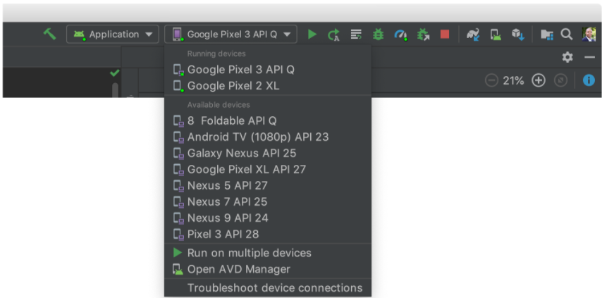

Android App
Android App development uses Android Studio as a development software and the Java or Kotlin language. Java is used much more commonly and what we'll use here.
You'll need to have Java and Android Studio downloaded. You can download Java here and Android Studio here.
Android Studio
In the Welcome to Android Studio window, click Start a new Android Studio project.
In the Select a Project Template window, select Empty Activity and click Next.
A window called Configure your project will pop up. In it, complete the following:
- Enter "My First App" in the Name field.
- Enter "com.example.myfirstapp" in the Package name field.
- If you'd like to place the project in a different folder, change its Save location.
- Select Java from the Language drop-down menu.
- Select the lowest version of Android your app will support in the Minimum SDK field.
- If your app will require legacy library support, mark the Use legacy android.support libraries checkbox. We'll assume it won't for your first project, so leave this unchecked.
- Leave the other options as they are.
Once you click Finish, the Android Studio main window will appear.
Make sure the Project window is open by selecting select View > Tool Windows > Project and the Android view is selected from the drop-down list at the top of that window. You will see the following files:
- app > java > com.example.myfirstapp > MainActivity
- app > res > layout > activity_main.xml
- app > manifests > AndroidManifest.xml
This is the main activity of your app. When you run your app, it will load the layout of this Activity.
This file defines the layout for the user interface. Right now, it has a TextView element with the text "Hello, World!"
The manifest file describes the characteristics of the app and defines each of its components.
Running Your App
It's easiest to run your app on an emulator Android Studio provides. Otherwise, you would need to connect your Android device to your computer.
Create an Android Virtual Device (AVD) in the Android Studio that the emulator can use to install and run your app.
Select your app from the run/debug drop-down menu in the toolbar at the top of the window.
In the toolbar, select the AVD that you would like to run your app on from the drop-down menu. It should look like this:

Click Run button. 
Your app will install on the AVD and start the emulator. You'll see "Hello, World" displayed in the app.
Congrats, you've developed your first Andorid App! Be proud of yourself.